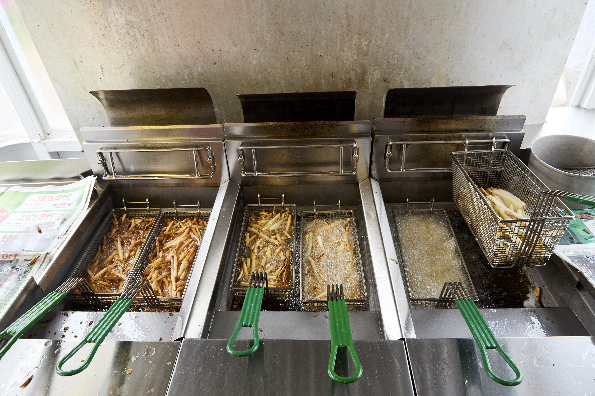
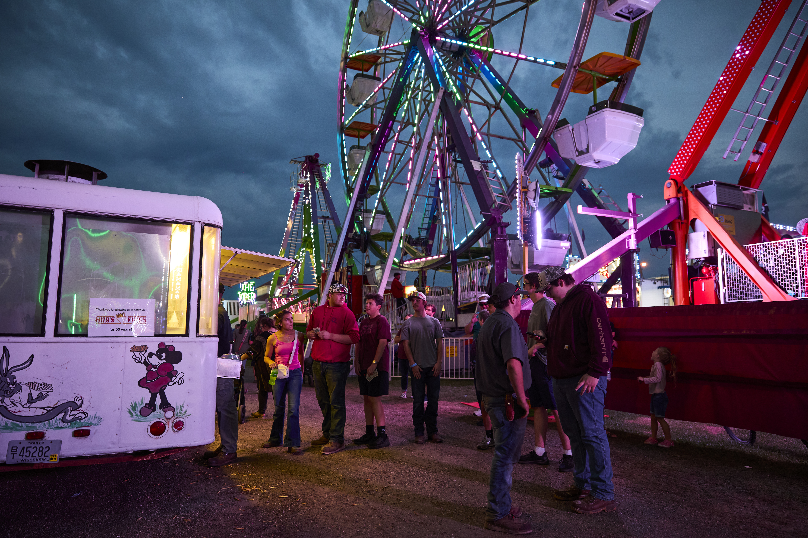
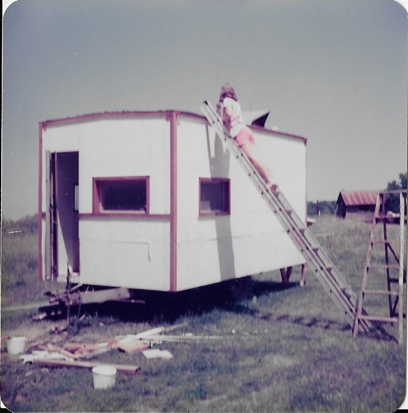

TASTE A TRADITION!
YOUR FAMILY OWNED FRESH-CUT FRENCH FRIES BROUGHT TO YOU IN MEMORY OF LOWELL AND CAROL HUBBARD
A popular family-run fry stand started in 1975 by Lowell Hubbard and Carol Hubbard. Known for its fresh-cut, crispy fries and longtime presence at the Vernon County Fair.
MENU


